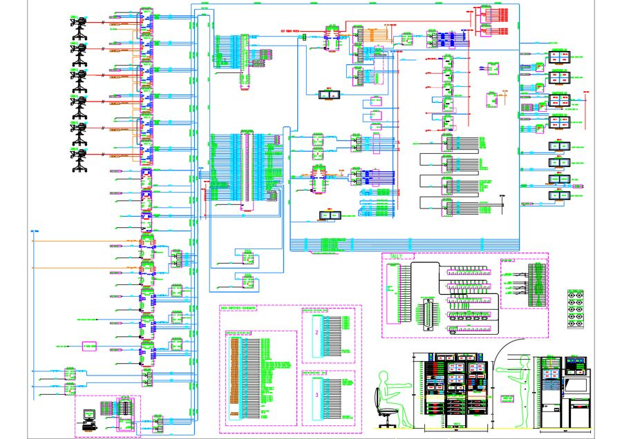

OB Van · HD
عربة بث خارجي HD
تصميم كامل لنظام الفيديو والصوت في عربة نقل خارجي بست كاميرات.
- 6 كاميرات مع وحدات CCU وربط بالألياف
- مصفوفة Routing وVision Mixer وMultiviewers
- نظام Tally وشبكات البيانات (Data Switches)
- توزيع الخزائن (Racks) وبيئة عمل المشغّلين